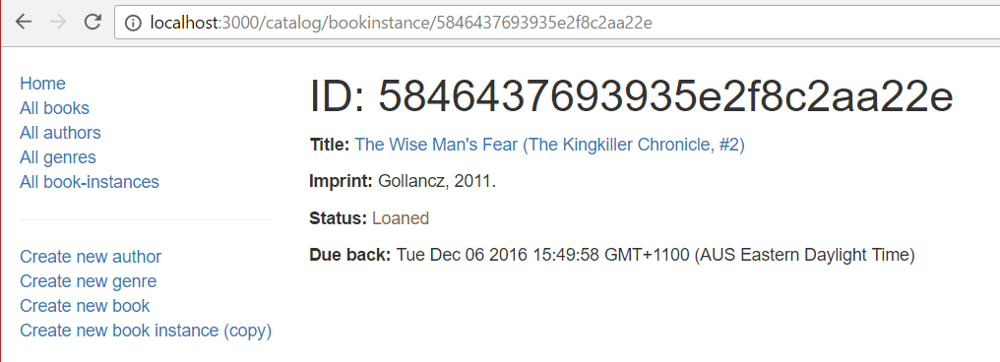

The BookInstance detail page needs to display the information for each BookInstance, identified using its (automatically generated) _id field value. This will include the Book name (as a link to the Book detail page) along with other information in the record.
Open /controllers/bookinstanceController.js. Find the exported bookinstance_detail() controller method and replace it with the following code.
// Display detail page for a specific BookInstance.
exports.bookinstance_detail = function(req, res, next) {
BookInstance.findById(req.params.id)
.populate('book')
.exec(function (err, bookinstance) {
if (err) { return next(err); }
if (bookinstance==null) { // No results.
var err = new Error('Book copy not found');
err.status = 404;
return next(err);
}
// Successful, so render.
res.render('bookinstance_detail', { title: 'Copy: '+bookinstance.book.title, bookinstance: bookinstance});
})
};
The method calls BookInstance.findById() with the ID of a specific book instance extracted from the URL (using the route), and accessed within the controller via the request parameters: req.params.id). It then calls populate() to get the details of the associated Book.
Create /views/bookinstance_detail.pug and copy in the content below.
extends layout
block content
h1 ID: #{bookinstance._id}
p #[strong Title:]
a(href=bookinstance.book.url) #{bookinstance.book.title}
p #[strong Imprint:] #{bookinstance.imprint}
p #[strong Status:]
if bookinstance.status=='Available'
span.text-success #{bookinstance.status}
else if bookinstance.status=='Maintenance'
span.text-danger #{bookinstance.status}
else
span.text-warning #{bookinstance.status}
if bookinstance.status!='Available'
p #[strong Due back:] #{bookinstance.due_back}
Everything in this template has been demonstrated in previous sections.
Run the application and open your browser to http://localhost:3000/. Select the All book-instances link, then select one of the items. If everything is set up correctly, your site should look something like the following screenshot.

Currently most dates displayed on the site use the default JavaScript format (e.g. Tue Oct 06 2020 15:49:58 GMT+1100 (AUS Eastern Daylight Time)). The challenge for this article is to improve the appearance of the date display for Author lifespan information (date of death/birth) and for BookInstance detail pages to use the format: Oct 6th, 2016.
You can use the same approach as we used for the Book Instance List (adding the virtual property for the lifespan to the Author model and use luxon to format the date strings).
To complete this challenge, you must:
due_back with due_back_formatted in the BookInstance detail page.Author model to add a lifespan virtual property. The lifespan should look like: date_of_birth - date_of_death, where both values have the same date format as BookInstance.due_back_formatted.Author.lifespan in all views where you currently explicitly use date_of_birth and date_of_death.